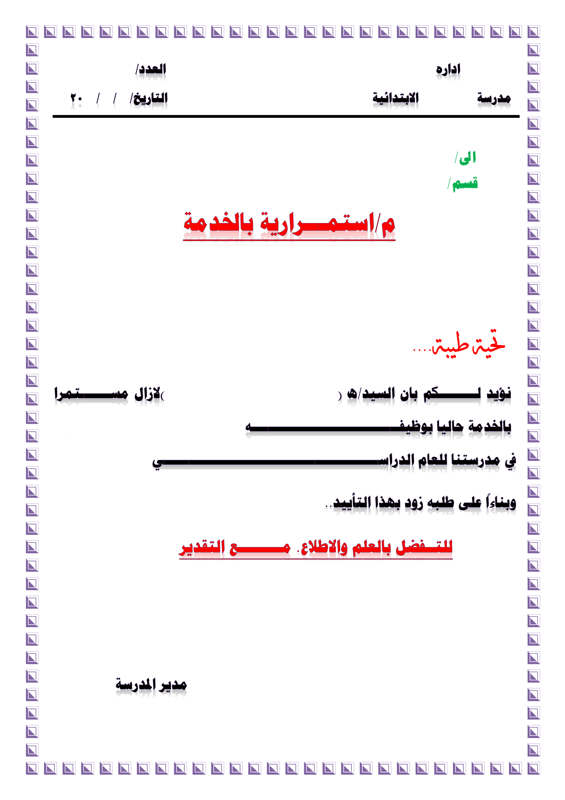
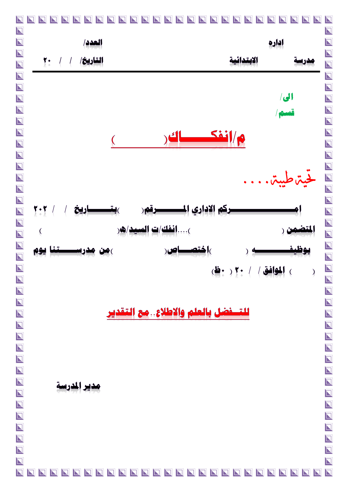
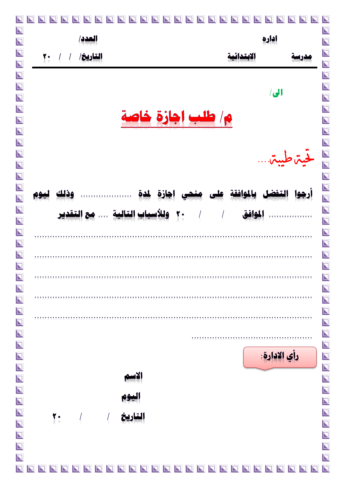
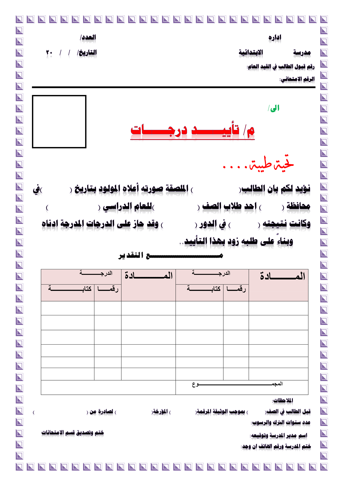
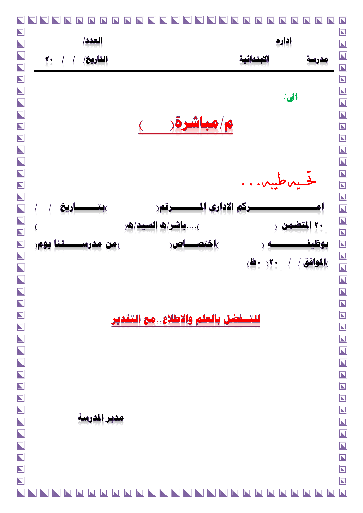
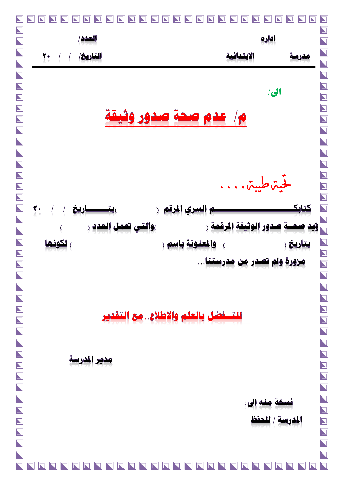
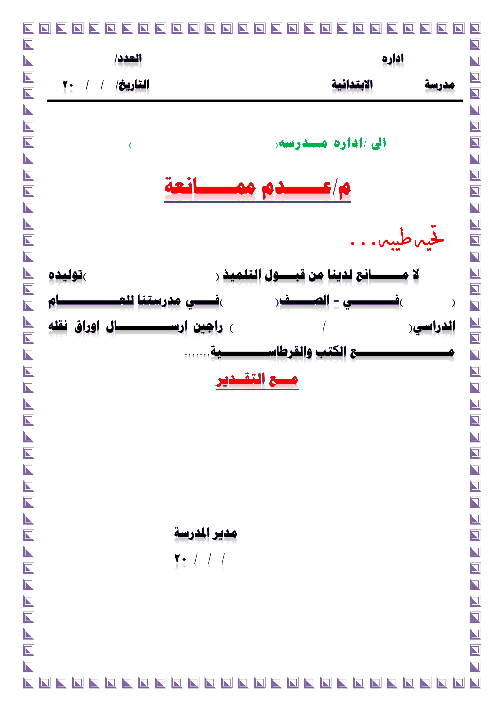
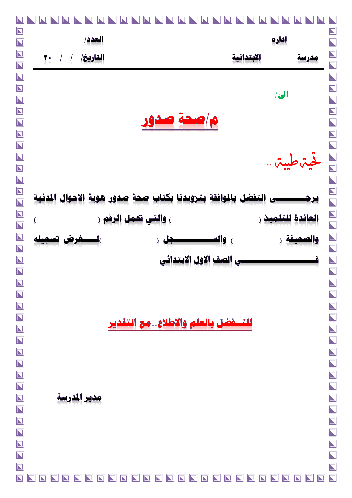

محرر الصور والنصوص التفاعلي
اختر صورة للبدء

استخدام

استخدام

استخدام

استخدام

استخدام

استخدام

استخدام

استخدام
اختر صورة من جهازك
جارٍ التحميل...
الحجم:
-
+
لون الخط:
لون الحد:
عرض الحد:
-
+
لون الخلفية:
شفافية الخلفية:
نوع الخط:
Cairo (افتراضي)
Noto Kufi Arabic
Reem Kufi
Reem Kufi Fun
Reem Kufi Ink
Aref Ruqaa
Aref Ruqaa Ink
Amiri
Almarai
Changa
El Messiri
Harmattan
IBM Plex Sans Arabic
Jomhuria
Katibeh
Lalezar
Lateef
Lemonada
Mada
Markazi Text
Mirza
Noto Naskh Arabic
Noto Sans Arabic
Readex Pro
Ruwudu
Scheherazade New
Tajawal
Vibes
Gulzar
Noto Nastaliq Urdu
Alkalami
Alkalami
Mirza
شفافية النص:
تباعد الأحرف:
-
+
زاوية الدوران:
-
+
تباعد الأسطر:
-
+
B
I
U
ظل
توهج
حد
تدرج
نسخ
لصق
حذف
حفظ الصورة (PNG)
تصدير كـ PDF
طباعة
اختيار صورة أخرى